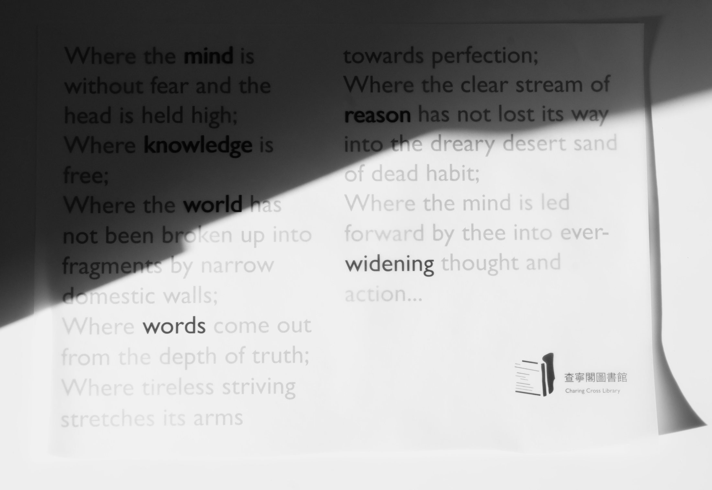
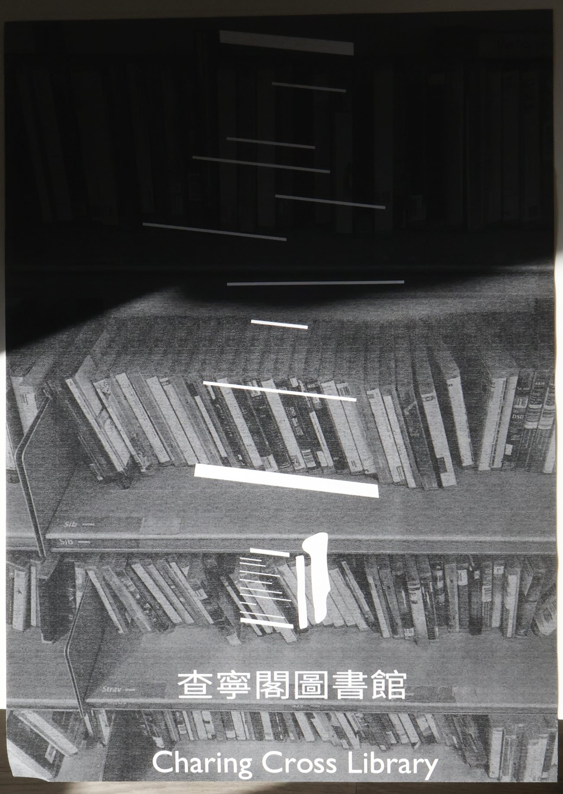
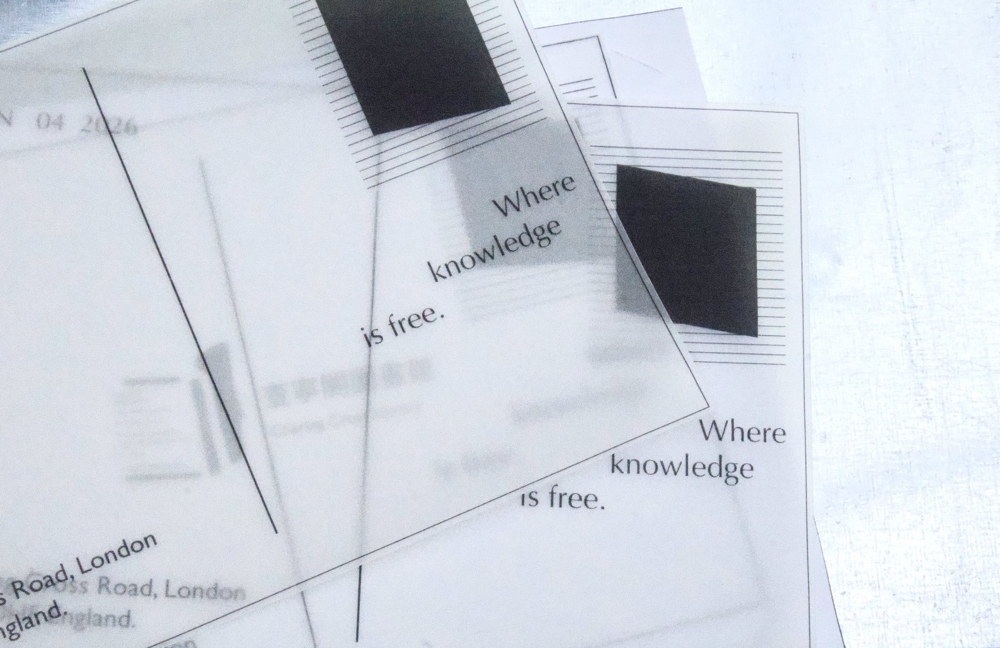
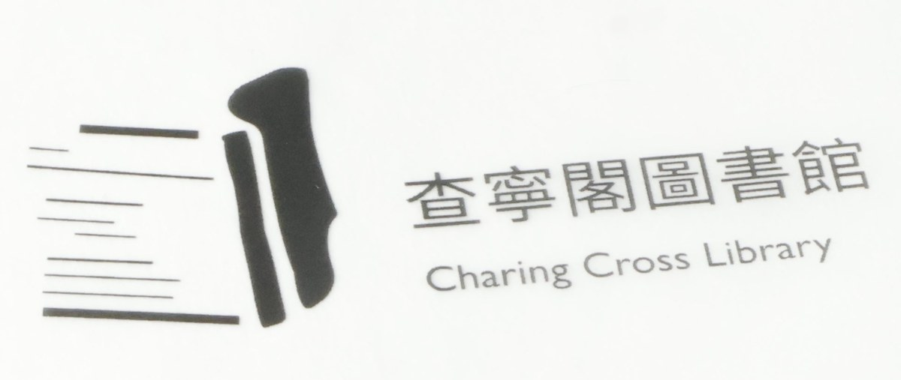

Language
Chinese and English are set as one system — from the shelf ends and floor marks to the programme notes and the catalogue.

Westminster City Council library · Charing Cross Road, WC2H
Where knowledge is free.
A public library two minutes from Chinatown, reimagined as a bilingual reading space — the Chinese and English collections held in a single visual, material and spatial system.
Charing Cross Library stands in the centre of London, a street away from Chinatown. International visitors and readers from many language backgrounds pass its door every day. The redesign starts from that fact.
Public libraries have long spoken a functional, institutional language: hard stone, ruled signage, silence used as instruction. This project proposes its opposite — a warmer, more approachable room in which language, cultural programming and spatial experience are designed as one.
Chinese and English are set as one system — from the shelf ends and floor marks to the programme notes and the catalogue.
A seasonal programme of reading rooms, translation workshops and festivals gives the building a rhythm that follows both calendars.
Quieter thresholds, softer light and places to stay replace the functional geometry of the conventional public library.
Wood-fibre acoustic panels and woven textile signage take the place of cold stone surfaces: calmer, warmer, longer lasting.
The identity is built from Gitanjali 35 by Rabindranath Tagore. Six words from the poem — mind, knowledge, world, words, reason, widening — are set at different weights and slightly out of alignment, the way thought arrives unevenly.
They carry through the poster, the wayfinding and the reading rooms. Scrolling gathers them back into the line they came from: into ever-widening thought and action.
The six words align — 思想不斷開闊
Gitanjali 35
Rabindranath Tagore, 1912
Where the mind is without fear and the head is held high; Where knowledge is free; Where the world has not been broken up into fragments by narrow domestic walls; Where words come out from the depth of truth; Where tireless striving stretches its arms towards perfection; Where the clear stream of reason has not lost its way into the dreary desert sand of dead habit; Where the mind is led forward by thee into ever-widening thought and action — into that heaven of freedom, let this place awake.
The first public statement of the identity is a single sheet. Nine uneven ruled lines sit beside the solid edge of a standing book — the mark, enlarged to the width of the page, with the poem running through it.
Printed black on uncoated stock and pasted at eye level along Charing Cross Road, it works as reading matter before it works as advertising.


The mark is not a symbol added to the page — it is the page itself. Nine ruled lines of unequal length sit beside the narrow spine and solid edge of a standing book: knowledge held open, not contained.
The same block of lines appears as a graphic device across the library: on shelf ends, window vinyl, the edge of the reading tables and the corner of every printed sheet.

The redesign replaces the hard, cold surfaces of the institutional library with natural and sustainable materials: wood-fibre acoustic panels to bring the noise of Charing Cross Road down, and woven textile signage that can be read by touch as well as by eye.
Shelving is lowered to sightline, the Chinese and English collections are shelved together by subject rather than apart by language, and a long table runs the length of the reading room so that readers can work alone in company.
Public computers, printing and help with anything digital.
電腦借用Fiction, poetry, history and children's books in Chinese, shelved in the main reading room.
中文圖書館Throughout the building, no membership required to log on.
免費無線網絡A wide range of CDs and listening points, plus scores and language courses.
音樂館藏Self-service, with staff on hand at the enquiry desk.
影印列印掃描Quiet rooms for reading groups, classes and community meetings.
場地租用From “Our stories”
At the heart of Charing Cross Library is a commitment to making Chinese-language knowledge more accessible within London's multicultural landscape.
The library is conceived as a platform for cultural exchange, where Chinese and British communities can meet through reading, learning and shared experience. Its personality is intelligent yet approachable, rational yet warm — bridging cultures through thoughtful design and accessible information.
Four letters a year: reading rooms, translation workshops, festivals and the books we are recommending. Posted from Charing Cross Road, written in English and Chinese.